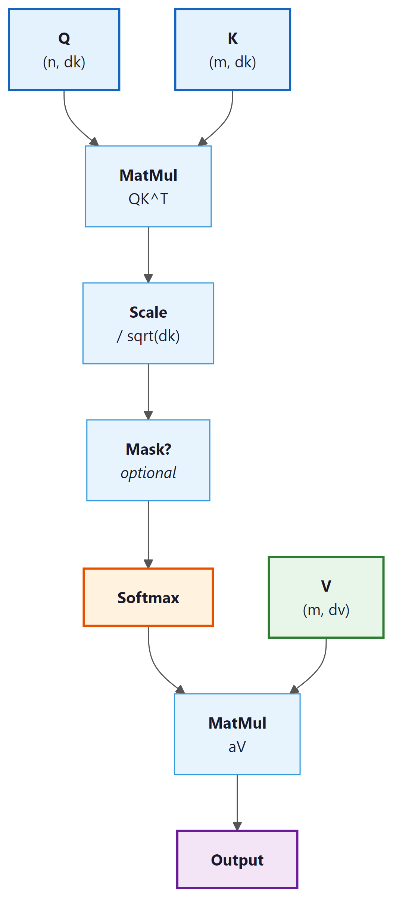
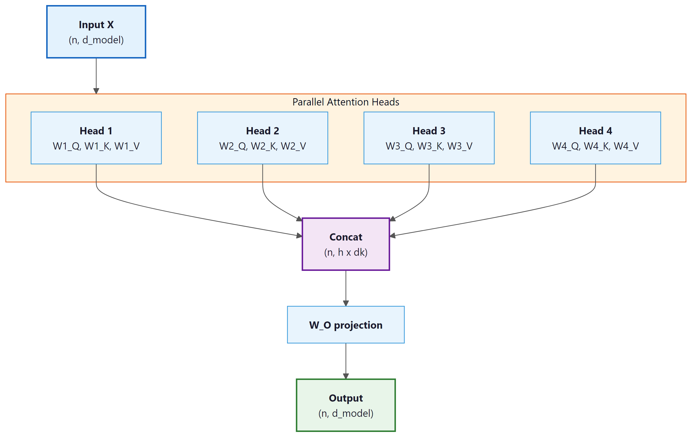

Why have one head when you can have eight, each looking at the sentence from a slightly different existential angle?
Attn, Multi-Headed AI Agent
Prerequisites
This section assumes you understand the intuitive attention mechanism from Section 3.2 (alignment scores, weighted context vectors). Matrix multiplication and basic linear algebra (from Section 0.2) are needed for the Q/K/V formulation. The multi-head attention mechanism developed here is the core component of the Transformer architecture detailed in Section 4.1; for optimization-focused variants like grouped-query attention, see Section 4.2.
From seq2seq attention to the Transformer's attention. In Section 3.2, we used attention to let a decoder peek at encoder states. The Transformer (Vaswani et al., 2017) takes this much further. It introduces the query/key/value (Q/K/V) abstraction, scales the dot products by √$d_{k}$ for numerical stability, runs multiple attention "heads" in parallel, and applies attention not just between encoder and decoder but also within a single sequence (self-attention). These building blocks are the heart of GPT, BERT, and every modern LLM. By the end of this section, you will have implemented multi-head self-attention from scratch and understood every piece of the mechanism that makes Transformers work.

3.3.1 The Query, Key, Value Abstraction
In Section 3.2, we described attention as a soft dictionary lookup: a query is compared against keys to produce weights, which are used to combine values. In Bahdanau and Luong attention, the keys and values were the same thing (encoder hidden states), and the query was the decoder state.
The Transformer formalizes and generalizes this. Given input vectors, it creates three separate representations through learned linear projections:
- Query (Q): What am I looking for? Obtained by projecting the input through $W^{Q}$.
- Key (K): What do I contain? Obtained by projecting the input through $W^{K}$.
- Value (V): What should I send back? Obtained by projecting the input through $W^{V}$.
These are separate projections of the same (or different) input vectors. This decoupling is crucial: the information used for matching (Q and K) can differ from the information that gets passed forward (V). A position might have a key that says "I am a verb in past tense" (used for matching) while its value encodes the actual semantic meaning of that verb (used for the output).
3.3.2 Scaled Dot-Product Attention
Given query matrix $Q$, key matrix $K$, and value matrix $V$, the Transformer computes:
Let us break this formula apart:
- QKT: Computes dot-product similarity between every query and every key simultaneously. If Q has shape $(n, d_{k})$ and K has shape $(m, d_{k})$, this produces an $(n, m)$ matrix of raw attention scores.
- Scaling by √$d_{k}$: Divides each score by the square root of the key dimension. Without this scaling, the dot products would grow in magnitude with $d_{k}$, pushing the softmax into saturated regions where its gradients are extremely small.
- Softmax: Converts each row into a probability distribution over key positions.
- Multiply by V: Uses the attention weights to take a weighted combination of value vectors.
Why Scale by √dk?
Without the √dk scaling, Transformers would barely train at all. The original "Attention Is All You Need" paper reports that unscaled dot-product attention produced significantly worse results. This single division operation is easy to overlook, but it is one of those small engineering decisions that makes the difference between a groundbreaking architecture and a failed experiment.
Consider two random vectors $q$ and $k$, each with entries drawn from a standard normal distribution. Their dot product $q \cdot k = \Sigma _{i} q_{i}k_{i}$ is a sum of $d_{k}$ independent products, each with mean 0 and variance 1. By the properties of sums of random variables, the dot product has mean 0 and variance $d_{k}$. As $d_{k}$ grows, the typical magnitude of the dot product increases as $\sqrt{d_k}$.
Large-magnitude inputs to softmax produce outputs very close to 0 or 1, with tiny gradients. Dividing by $\sqrt{d_k}$ restores the variance to approximately 1, keeping softmax in its sensitive, gradient-friendly regime.
# Show why scaling matters: as d_k grows, raw dot products explode
# and softmax saturates, concentrating all weight on one key.
import torch
import torch.nn.functional as F
torch.manual_seed(42)
# Demonstrate the scaling problem
for d_k in [8, 64, 512]:
q = torch.randn(1, d_k)
K = torch.randn(10, d_k)
# Unscaled dot products
scores_unscaled = q @ K.T
# Scaled dot products
scores_scaled = scores_unscaled / (d_k ** 0.5)
probs_unscaled = F.softmax(scores_unscaled, dim=-1)
probs_scaled = F.softmax(scores_scaled, dim=-1)
print(f"d_k={d_k:3d} | unscaled std={scores_unscaled.std():.2f}, "
f"max prob={probs_unscaled.max():.4f} | "
f"scaled std={scores_scaled.std():.2f}, "
f"max prob={probs_scaled.max():.4f}")import torch
import torch.nn as nn
# Built-in MHA: same functionality, one line to create
mha = nn.MultiheadAttention(embed_dim=128, num_heads=4, batch_first=True)
x = torch.randn(2, 10, 128) # (batch, seq_len, d_model)
# Bidirectional (BERT-style): pass x as query, key, and value
out, weights = mha(x, x, x)
print(f"Output: {out.shape}") # torch.Size([2, 10, 128])
print(f"Weights: {weights.shape}") # torch.Size([2, 10, 10])
# Causal (GPT-style): generate a causal mask
mask = nn.Transformer.generate_square_subsequent_mask(10)
out_causal, _ = mha(x, x, x, attn_mask=mask)At $d_{k} = 512$, the unscaled softmax is completely saturated (max probability is essentially 1.0, meaning all attention goes to a single position). The scaled version maintains a healthy distribution. This is not just a cosmetic issue; saturated softmax means near-zero gradients, which makes training extremely difficult.
Scaling by $1/ \sqrt{d_k}$ is equivalent to using a softmax with temperature $T = \sqrt{d_k}$. Higher temperature produces softer (more uniform) distributions; lower temperature produces sharper (more peaked) ones. Some implementations allow an explicit temperature parameter for fine-grained control during inference, but during training the $\sqrt{d_k}$ scaling is standard.

Implementation from Scratch
This implementation computes scaled dot-product attention step by step, including the optional causal mask.
# Scaled dot-product attention from scratch: Q @ K^T / sqrt(d_k),
# optional mask to block future tokens, softmax, then V weighting.
import torch
import torch.nn.functional as F
import math
def scaled_dot_product_attention(Q, K, V, mask=None):
"""
Q: (batch, n_queries, d_k)
K: (batch, n_keys, d_k)
V: (batch, n_keys, d_v)
mask: (batch, n_queries, n_keys) or broadcastable, True = mask out
Returns: output (batch, n_queries, d_v), weights (batch, n_queries, n_keys)
"""
d_k = Q.size(-1)
# Step 1: Compute raw attention scores
scores = torch.bmm(Q, K.transpose(-2, -1)) # (batch, n_q, n_k)
# Step 2: Scale
scores = scores / math.sqrt(d_k)
# Step 3: Apply mask (if provided)
if mask is not None:
scores = scores.masked_fill(mask, float('-inf'))
# Step 4: Softmax to get attention weights
weights = F.softmax(scores, dim=-1) # (batch, n_q, n_k)
# Step 5: Weighted sum of values
output = torch.bmm(weights, V) # (batch, n_q, d_v)
return output, weights
# Test: 4 queries attending to 6 key-value pairs
batch, n_q, n_k, d_k, d_v = 2, 4, 6, 32, 64
Q = torch.randn(batch, n_q, d_k)
K = torch.randn(batch, n_k, d_k)
V = torch.randn(batch, n_k, d_v)
out, wts = scaled_dot_product_attention(Q, K, V)
print(f"Output shape: {out.shape}") # (2, 4, 64)
print(f"Weights shape: {wts.shape}") # (2, 4, 6)
print(f"Weights row 0 sums to: {wts[0, 0].sum():.4f}")
print(f"Weights[0,0]: {wts[0,0].detach().numpy().round(3)}")3.3.3 Self-Attention vs. Cross-Attention
The Q/K/V framework enables two fundamental modes of attention:
Self-Attention
In self-attention, the queries, keys, and values all come from the same sequence. Each position in the sequence attends to every other position (including itself). This allows each token to gather information from the entire input, building context-aware representations in a single operation.
Self-attention is what makes Transformers fundamentally different from RNNs. An RNN can only see past context (or future context, if bidirectional); self-attention sees all positions simultaneously. For a sentence like "The animal didn't cross the street because it was too tired," self-attention allows the model to connect "it" directly to "animal" regardless of distance.
Cross-Attention
In cross-attention, the queries come from one sequence (typically the decoder) while the keys and values come from a different sequence (typically the encoder). This is exactly the encoder-decoder attention from Section 3.2, reformulated in the Q/K/V framework. Cross-attention is what allows a Transformer decoder to "look at" the encoder output.
| Property | Self-Attention | Cross-Attention |
|---|---|---|
| Q source | Same sequence (X) | Decoder states |
| K, V source | Same sequence (X) | Encoder outputs |
| Typical use | Build contextual representations | Combine encoder/decoder information |
| Score matrix shape | (n, n), square | ($n_{dec}$, $n_{enc}$), rectangular |
| Examples | Section 6.1, GPT encoder/decoder blocks | Machine translation, T5 decoder |
3.3.4 Causal Masking for Autoregressive Models
In autoregressive language models (like GPT), each token should only attend to tokens
that appear before it in the sequence (and itself). It must not "peek" at future
tokens that have not been generated yet. This causal constraint is what makes left-to-right text generation (Chapter 5) possible. This constraint is enforced with a
causal mask: an upper-triangular matrix of True values
that sets future positions to $- \infty$ before the softmax.
After masking, the scores for future positions become $- \infty$, which softmax maps to exactly 0. Each position can only attend to itself and earlier positions.
# Causal (autoregressive) masking: build an upper-triangular boolean mask
# and pass it to scaled_dot_product_attention to block future positions.
import torch
# Create a causal mask for sequence length 5
seq_len = 5
causal_mask = torch.triu(torch.ones(seq_len, seq_len, dtype=torch.bool), diagonal=1)
print("Causal mask (True = blocked):")
print(causal_mask.int())
# Apply to attention scores
scores = torch.randn(1, seq_len, seq_len)
# Mask future positions with -inf so softmax ignores them
scores_masked = scores.masked_fill(causal_mask.unsqueeze(0), float('-inf'))
# Convert scores to attention weights (probabilities summing to 1)
weights = torch.softmax(scores_masked, dim=-1)
print("\nAttention weights (causal):")
print(weights[0].detach().numpy().round(3))Notice the triangular structure: position 0 can only attend to itself (weight 1.0), position 1 can attend to positions 0 and 1, and so on. The upper triangle is exactly zero, guaranteeing no information leakage from the future.
Causal masking is what distinguishes GPT-style (decoder-only) models from BERT-style (encoder-only) models. BERT uses bidirectional self-attention (no mask), so every position can attend to every other position. GPT uses causal self-attention (with mask), so each position can only see the past. This difference determines what tasks each architecture is suited for: BERT excels at understanding (classification, NER), while GPT excels at generation (text completion, dialogue).
3.3.5 Multi-Head Attention
Multi-head attention implements a form of "ensemble of subspaces" that has deep parallels in signal processing and neuroscience. In signal processing, a filter bank decomposes a complex signal into frequency bands, each capturing a different scale of structure. Multi-head attention does something analogous: each head projects the input into a different learned subspace and computes attention within that subspace, capturing a different relational pattern (syntactic, semantic, positional). Neuroscience research on the visual cortex reveals a strikingly similar architecture: populations of neurons in area V1 are organized into orientation columns, with different groups selectively responding to different edge orientations in the visual field. The brain does not attempt to represent all visual features with a single neural population; it allocates separate computational channels to separate feature types and integrates them downstream. Multi-head attention independently arrived at the same architectural principle.
A single attention head can only capture one type of relationship at a time. If a word needs to attend to its syntactic head, its semantic role, and a coreferent pronoun simultaneously, a single attention distribution cannot represent all three patterns.
Multi-head attention solves this by running multiple attention operations in parallel, each with its own learned projections:
The individual head outputs are concatenated and projected back to the model dimension:
Each head operates in a lower-dimensional subspace. If the model dimension is $d_{model}$ and there are $h$ heads, each head works with dimension $d_{k} = d_{model} / h$. Variants like Grouped Query Attention (GQA) reduce the number of key/value heads to save memory; we cover these optimizations in Section 4.3 and their inference impact in Section 9.2. The outputs of all heads are concatenated and projected back to the full model dimension through $W^{O}$.

3.3.6 Lab: Implementing Multi-Head Self-Attention
Let us now build a complete, production-style multi-head self-attention module. This is the exact computation at the heart of every Transformer layer.
# Multi-head self-attention: project input into h separate (Q, K, V) triples,
# run scaled dot-product attention on each head, concatenate, and project back.
import torch
import torch.nn as nn
import torch.nn.functional as F
import math
class MultiHeadSelfAttention(nn.Module):
"""Multi-head self-attention with optional causal masking."""
def __init__(self, d_model, n_heads, dropout=0.0):
super().__init__()
assert d_model % n_heads == 0, "d_model must be divisible by n_heads"
self.d_model = d_model
self.n_heads = n_heads
self.d_k = d_model // n_heads # dimension per head
# Combined Q, K, V projection (more efficient than three separate ones)
self.qkv_proj = nn.Linear(d_model, 3 * d_model)
# Output projection
self.out_proj = nn.Linear(d_model, d_model)
self.dropout = nn.Dropout(dropout)
def forward(self, x, causal=False):
"""
x: (batch, seq_len, d_model)
causal: if True, apply causal mask
Returns: (batch, seq_len, d_model)
"""
B, T, C = x.shape
# Step 1: Project to Q, K, V
qkv = self.qkv_proj(x) # (B, T, 3*C)
Q, K, V = qkv.chunk(3, dim=-1) # each: (B, T, C)
# Step 2: Reshape for multi-head: (B, T, C) -> (B, h, T, d_k)
Q = Q.view(B, T, self.n_heads, self.d_k).transpose(1, 2)
K = K.view(B, T, self.n_heads, self.d_k).transpose(1, 2)
V = V.view(B, T, self.n_heads, self.d_k).transpose(1, 2)
# Step 3: Scaled dot-product attention
scores = torch.matmul(Q, K.transpose(-2, -1)) # (B, h, T, T)
scores = scores / math.sqrt(self.d_k)
# Step 4: Causal mask (optional)
if causal:
mask = torch.triu(torch.ones(T, T, device=x.device, dtype=torch.bool), diagonal=1)
scores = scores.masked_fill(mask.unsqueeze(0).unsqueeze(0), float('-inf'))
# Step 5: Softmax + dropout
weights = F.softmax(scores, dim=-1) # (B, h, T, T)
weights = self.dropout(weights)
# Step 6: Weighted sum of values
out = torch.matmul(weights, V) # (B, h, T, d_k)
# Step 7: Concatenate heads: (B, h, T, d_k) -> (B, T, C)
out = out.transpose(1, 2).contiguous().view(B, T, C)
# Step 8: Output projection
out = self.out_proj(out) # (B, T, C)
return out, weights
# Create and test the module
mha = MultiHeadSelfAttention(d_model=128, n_heads=4)
x = torch.randn(2, 10, 128) # batch=2, seq_len=10, d_model=128
# Bidirectional (BERT-style)
out_bi, wts_bi = mha(x, causal=False)
print(f"Bidirectional output: {out_bi.shape}")
print(f"Weights shape: {wts_bi.shape}")
# Causal (GPT-style)
out_ca, wts_ca = mha(x, causal=True)
print(f"Causal output: {out_ca.shape}")
# Verify causal mask works: position 0 should have zero weight on all future positions
print(f"\nCausal weights for head 0, position 0:")
print(f" {wts_ca[0, 0, 0].detach().numpy().round(4)}")
print(f" (Only first entry is non-zero: position 0 attends only to itself)")
# Count parameters
params = sum(p.numel() for p in mha.parameters())
print(f"\nTotal parameters: {params:,}")
print(f" QKV projection: {128 * 3 * 128 + 3 * 128:,}")
print(f" Output projection: {128 * 128 + 128:,}")The 50-line from-scratch implementation above is valuable for understanding the internals. In production, PyTorch provides a built-in module that handles the Q/K/V projections, head splitting, masking, and output projection in a single optimized call:
pip install torch (already installed if you followed Section 0.3). The built-in version also supports F.scaled_dot_product_attention with FlashAttention backends on compatible GPUs.
In our implementation, we use a single linear layer (qkv_proj) to compute Q, K, and V simultaneously, then split the output into three parts. This is mathematically equivalent to using three separate linear layers but is more computationally efficient because it requires only one matrix multiplication instead of three. Most production implementations (PyTorch's nn.MultiheadAttention, Hugging Face Transformers) use this fused approach.
3.3.7 Complexity Analysis: The O(n²) Problem
The quadratic cost of self-attention is why your favorite chatbot has a context window limit. Doubling the sequence length quadruples the memory needed, which is why "just make the context window bigger" is roughly as simple as "just make the ocean smaller."
Self-attention has a fundamental computational cost: the score matrix $QK^{T}$ has shape $(n, n)$ where $n$ is the sequence length. This means both the computation and memory required grow quadratically with sequence length.
| Operation | Time Complexity | Space Complexity |
|---|---|---|
| Q, K, V projections | O(n · d²) | O(n · d) |
| QKT computation | O(n² · d) | O(n²) |
| Softmax | O(n²) | O(n²) |
| Attention × V | O(n² · d) | O(n · d) |
| Total | O(n² · d) | O(n² + n · d) |
For typical LLM settings, $n$ can be 2048, 8192, or even 128,000 tokens. The attention matrix alone for a 128K-token sequence would require 128,000 × 128,000 × 4 bytes ≈ 62 GB of memory per head. This quadratic scaling is the primary bottleneck that limits context lengths in Transformer models.
# Benchmark attention wall-clock time as sequence length doubles.
# Quadratic O(n^2) scaling becomes visible at longer sequences.
import torch, time
# Measure how attention scales with sequence length
d_model, n_heads = 128, 4
mha = MultiHeadSelfAttention(d_model, n_heads)
mha.eval()
print(f"{' seq_len':>10} {'time (ms)':>10} {'mem (MB)':>10} {'ratio':>8}")
prev_time = None
for seq_len in [64, 128, 256, 512, 1024, 2048]:
x = torch.randn(1, seq_len, d_model)
# Warm up
with torch.no_grad():
_ = mha(x)
# Time it
t0 = time.perf_counter()
with torch.no_grad():
for _ in range(20):
_ = mha(x)
elapsed = (time.perf_counter() - t0) / 20 * 1000
# Memory for attention matrix
attn_mem = seq_len * seq_len * n_heads * 4 / 1e6 # float32
ratio = f"{elapsed / prev_time:.1f}x" if prev_time else ""
print(f"{seq_len:>10} {elapsed:>10.2f} {attn_mem:>10.2f} {ratio:>8}")
prev_time = elapsedEach doubling of sequence length increases computation time by roughly 4x (approaching the theoretical quadratic scaling). The memory for attention matrices also grows quadratically. This is why modern LLM research invests heavily in techniques like Flash Attention, sparse attention, and linear attention approximations to tame this O(n²) cost.
PyTorch 2.0+ includes a fused attention kernel that automatically uses FlashAttention when available.
import torch
import torch.nn.functional as F
# Simulated Q, K, V: batch=1, heads=8, seq_len=128, head_dim=64
Q = torch.randn(1, 8, 128, 64)
K = torch.randn(1, 8, 128, 64)
V = torch.randn(1, 8, 128, 64)
# PyTorch's fused kernel selects FlashAttention, memory-efficient,
# or math backend automatically based on hardware
out = F.scaled_dot_product_attention(Q, K, V, is_causal=True)
print("Output shape:", out.shape) # (1, 8, 128, 64)
# Check which backend was selected
# Requires: pip install flash-attn (for the FlashAttention backend on CUDA)Despite the quadratic cost, self-attention has massive advantages over RNNs: (1) all positions are processed in parallel (no sequential bottleneck), (2) any two positions are connected by a single attention operation (constant path length, vs. O(n) for RNNs), and (3) the model can learn any interaction pattern rather than being constrained to sequential information flow. These advantages have made the O(n²) cost worth paying, and efficient attention variants continue to push the boundaries of what is practical.
The O(n²) cost of self-attention is not a design flaw; it is the fundamental price of allowing every token to interact with every other token. This is structurally identical to the N-body problem in physics, where computing gravitational or electromagnetic interactions between N particles requires O(N²) pairwise force calculations. Just as physicists developed approximation methods (Barnes-Hut tree codes, fast multipole methods) to reduce N-body computation to O(N log N) by grouping distant particles, researchers have developed sparse attention, linear attention, and locality-sensitive hashing to approximate the full attention matrix. The parallel extends further: in both domains, nearby interactions matter more than distant ones, which is exactly the intuition behind local attention windows. The question of whether O(n) attention can truly match O(n²) quality is equivalent to asking whether long-range token interactions carry essential information, a question whose answer varies by task, just as gravitational and electromagnetic forces have different effective ranges.
In a sentiment classifier built on multi-head self-attention, different heads learn to capture different linguistic features. For the sentence "The food was great but the service was terrible," one head might learn to attend from "great" and "terrible" to the nearby nouns ("food" and "service"), capturing what each adjective modifies. Another head might attend from "terrible" backward to "but," learning that the conjunction signals a contrast. A third head might attend broadly across the entire sentence, computing a summary representation. This division of labor happens automatically during training and is why multi-head attention outperforms a single, larger attention head: the model can represent multiple relationship types simultaneously rather than averaging them into a single attention pattern.
3.3.8 Putting It All Together: Complete Example
Let us combine everything into a demonstration that shows multi-head self-attention operating on actual token embeddings, with visualization of what different heads learn:
# End-to-end demo: embed a 5-word sentence, run multi-head attention,
# and inspect the output shape to verify the residual-ready dimensions.
import torch
import torch.nn as nn
# Simulate a small vocabulary and sentence
vocab = {"the": 0, "cat": 1, "sat": 2, "on": 3, "mat": 4}
sentence = ["the", "cat", "sat", "on", "mat"]
token_ids = torch.tensor([[vocab[w] for w in sentence]])
# Embedding + self-attention
d_model, n_heads = 64, 4
embedding = nn.Embedding(len(vocab), d_model)
attn = MultiHeadSelfAttention(d_model, n_heads)
# Forward pass
x = embedding(token_ids) # (1, 5, 64)
output, weights = attn(x, causal=True) # causal for GPT-style
print(f"Input shape: {x.shape}")
print(f"Output shape: {output.shape}")
print(f"Weights shape: {weights.shape} (batch, heads, queries, keys)")
# Show what each head attends to for the word "mat" (last position)
print(f"\nAttention to generate representation of 'mat' (position 4):")
for h in range(n_heads):
w = weights[0, h, 4].detach().numpy()
top_pos = w.argmax()
print(f" Head {h}: {' '.join(f'{sentence[i]}:{w[i]:.2f}' for i in range(5))}"
f" (peak: '{sentence[top_pos]}')")
# Verify output is different from input (attention has mixed information)
cos_sim = nn.functional.cosine_similarity(x[0], output[0], dim=-1)
print(f"\nCosine similarity (input vs output) per position:")
for i, word in enumerate(sentence):
print(f" '{word}': {cos_sim[i]:.4f}")Each head focuses on a different relationship. Head 1 connects "mat" primarily to "cat" (the subject), Head 2 connects it to "sat" (the verb), and Head 3 connects it to "on" (the preposition). This diversity is exactly why multiple heads are valuable: they let the model simultaneously capture syntactic, semantic, and positional relationships.
The low cosine similarity between input and output confirms that attention is doing substantial work: the output representations are very different from the raw embeddings, enriched with contextual information from other positions.
Show Answer
Show Answer
Show Answer
Show Answer
Show Answer
Exercises
Suppose you replace the standard $\sqrt{d_{k}}$ scaling with (a) $d_{k}$ (linear scaling, no square root) and (b) no scaling at all. For $d_{k} = 64$ with random Q and K vectors of unit-variance entries, predict the standard deviation of the resulting attention scores in each case. Then describe what happens to the softmax distribution at each setting.
Answer Sketch
Raw dot product variance is $d_{k} = 64$, so std is $\sqrt{64} = 8$. (a) With linear scaling by 64, std becomes $8/64 = 0.125$, very small. The softmax is nearly uniform: weights all near 1/n. The model cannot focus, and training collapses to averaging. (b) No scaling: std = 8. The softmax saturates to nearly one-hot. Gradients vanish through softmax, making the attention pattern unable to update. The standard $\sqrt{d_{k}}$ gives std ≈ 1, which is the sweet spot: enough variation to allow focus, small enough to keep softmax in its high-gradient regime. This explains why neither alternative works in practice.
Modify the scaled_dot_product_attention function from Code Fragment 3.3.1 to handle the causal mask internally given a single boolean flag causal=True, removing the need to pass an explicit mask. Sketch the code (4-6 lines) and explain why you should construct the mask on the same device as the input tensors.
Answer Sketch
Inside the function, after computing scores: if causal: n = scores.size(-1); causal_mask = torch.triu(torch.ones(n, n, dtype=torch.bool, device=scores.device), diagonal=1); scores = scores.masked_fill(causal_mask, float('-inf')). The torch.triu(..., diagonal=1) produces an upper triangular mask above the diagonal, marking exactly the future positions. Building the mask on scores.device avoids a CPU-to-GPU copy on every forward pass, which would otherwise become a major bottleneck during training (forward pass is called millions of times). For maximum efficiency, production code caches a single causal mask up to the maximum sequence length and slices it as needed.
For a multi-head self-attention layer with $d_{model} = 768$ and $n_{heads} = 12$, compute (a) the per-head dimension $d_{k}$, (b) the total parameter count of the four projection matrices ($W^{Q}, W^{K}, W^{V}, W^{O}$), ignoring biases, and (c) compare against a single-head attention with $d_{k} = 768$. Why does the parameter count not depend on $n_{heads}$?
Answer Sketch
(a) $d_{k} = 768/12 = 64$. (b) Each of $W^{Q}, W^{K}, W^{V}$ is a 768x768 matrix because it concatenates the 12 per-head 768x64 sub-projections; $W^{O}$ is also 768x768. Total: $4 \times 768^{2} = 2{,}359{,}296$ parameters. (c) Single-head attention with $d_{k} = 768$: same four 768x768 matrices, also ~2.36M parameters. The count is identical because multi-head splits the same total dimension across heads instead of adding new parameters. The benefit is representational: 12 independent 64-dim attention computations capture 12 different relationship types simultaneously, while 1 single 768-dim attention computation must average them.
An encoder-decoder Transformer for translation has source length 25 (German) and target length 30 (English). All hidden dims are 512 with 8 heads. For one decoder layer, give the shapes of (a) the self-attention score matrix, (b) the cross-attention score matrix, and (c) which mask types apply to each. (d) If you double the source length to 50, what happens to memory and compute for each attention block?
Answer Sketch
(a) Decoder self-attention score: per head shape $(30, 30)$. Causal mask required to prevent peeking at future target tokens. (b) Cross-attention score: queries from decoder (length 30), keys/values from encoder (length 25), so per head shape $(30, 25)$. No causal mask (the entire source is available); a padding mask is used to ignore padding positions in the source. (c) Encoder self-attention (not asked but instructive): $(25, 25)$ with optional padding mask. (d) Doubling source length to 50: encoder self-attention quadruples in cost (50²/25² = 4x). Cross-attention only doubles (the keys/values dimension grows but queries stay the same). Decoder self-attention is unaffected. This asymmetry is why cross-attention scales better than encoder self-attention when source becomes long.
You train a Transformer with 12 heads and after training observe that 11 heads produce nearly identical attention patterns; only one head behaves distinctly. Diagnose two plausible causes and propose a fix for each.
Answer Sketch
Cause 1: Heads were initialized with too-similar random weights and never broke symmetry during training. Although unlikely with standard PyTorch initialization (which uses different random draws per parameter), it can happen when developers reuse a manual seed or copy weights between heads. Fix: re-initialize from scratch with independent seeds, or add a small head-specific bias to break symmetry. Cause 2: The model was over-parameterized for the task; 11 heads were redundant and converged to encode the same dominant pattern (perhaps copying the previous token). This is documented in Voita et al. (2019) "Analyzing Multi-Head Self-Attention." Fix: prune heads (Voita's "head importance" score) or fine-tune with structured dropout (DropHead) to encourage diversity. Note that head redundancy is not always a bug; some redundancy provides robustness if individual heads degrade.
You want to run inference on a single Transformer layer with $d_{model} = 4096$ and $n_{heads} = 32$ on a 24 GB GPU. Assume FP16 (2 bytes per element). (a) Compute the memory needed for the attention score matrix at sequence lengths 8K, 32K, and 128K (single batch, all heads in parallel). (b) Which of these fit in 24 GB if attention scores must coexist with model weights (~2 GB) and KV cache (~3 GB at 32K)? (c) What does this calculation imply about the necessity of memory-efficient attention algorithms like FlashAttention?
Answer Sketch
Score matrix per head is $n \times n$; with 32 heads in FP16 the total is $32 \times n^{2} \times 2$ bytes. (a) 8K: $32 \times 8192^{2} \times 2 = 4.29$ GB. 32K: $32 \times 32768^{2} \times 2 = 68.7$ GB. 128K: 1099 GB (over 1 TB!). (b) Only 8K fits comfortably: 4.29 GB scores + 2 GB weights + ~0.4 GB KV cache leaves headroom. 32K cannot fit even before considering anything else. (c) Standard attention is wholly infeasible past ~12K tokens on a 24 GB GPU because the score matrix alone exceeds memory. FlashAttention avoids materializing the full score matrix by computing softmax incrementally in tiles that fit in SRAM, reducing peak memory from O(n²) to O(n). Without such algorithms, no consumer GPU could process even a 32K-token prompt.
✓ Key Takeaways
- Q/K/V projections decouple what is used for matching (Q, K) from what is communicated (V), making attention far more expressive than using the same vectors for all roles.
- Scaling by √$d_{k}$ prevents dot products from growing with dimension, keeping softmax in a gradient-friendly regime. Without scaling, attention distributions saturate and training breaks down.
- Multi-head attention runs h independent attention operations in parallel, each in a lower-dimensional subspace. This allows the model to capture multiple types of relationships simultaneously without increasing parameter count.
- Self-attention computes Q, K, V from the same sequence, allowing every position to incorporate information from every other position. Cross-attention takes Q from one sequence and K, V from another.
- Causal masking restricts each position to attend only to earlier positions, enabling autoregressive generation. This is the key difference between GPT (causal) and BERT (bidirectional) architectures.
- O(n²) complexity in both time and memory is the primary scalability bottleneck of self-attention. Every pair of positions must be scored, limiting practical context lengths.
- What comes next: In Chapter 04, we will combine multi-head self-attention with feedforward layers, Section 4.1, and Section 4.1 to build the complete Transformer architecture.
Efficient attention variants remain one of the most active research areas. Grouped-query attention (GQA), used in Llama 2/3 and Mistral, reduces the KV cache by sharing key-value heads across query heads (see Section 4.2 for implementation). Multi-query attention (MQA) takes this further with a single shared KV head. FlashAttention (Dao et al., 2022, 2023) rewrites the attention computation to be IO-aware, achieving exact attention with sub-quadratic memory. Ring attention (Liu et al., 2023) distributes attention across devices to handle million-token contexts. Differential Transformer (Ye et al., 2024) introduces differential attention scores to reduce noise. These developments suggest that the raw O(n^2) cost of attention is increasingly a theoretical rather than practical bottleneck.
When debugging sequence models, use a batch of 2 to 4 short sequences (under 20 tokens) where you can manually verify the expected output. Scale up only after the model produces correct results on these micro-examples.
Hands-On Lab: Linear Algebra for Attention
Objective
Implement scaled dot-product attention and multi-head attention from scratch using only NumPy, then verify your implementation against PyTorch's built-in attention. This lab turns the mathematical formulas from this section into working code.
Skills Practiced
- Implementing the Q/K/V attention formula: softmax(QK^T / sqrt(d_k)) V
- Building multi-head attention with parallel heads and concatenation
- Applying causal masking for autoregressive generation
- Visualizing attention weight heatmaps
Setup
Install the required packages for this lab.
pip install numpy matplotlib torchSteps
Step 1: Implement scaled dot-product attention
Write the core attention function from the "Attention Is All You Need" paper. The scaling factor prevents the dot products from growing too large, which would push softmax into regions with vanishing gradients.
import numpy as np
def softmax(x, axis=-1):
"""Numerically stable softmax."""
e_x = np.exp(x - np.max(x, axis=axis, keepdims=True))
return e_x / np.sum(e_x, axis=axis, keepdims=True)
def scaled_dot_product_attention(Q, K, V, mask=None):
"""
Q, K, V: arrays of shape (seq_len, d_k)
mask: optional boolean array; True means "mask this position"
Returns: attention output and attention weights
"""
d_k = Q.shape[-1]
scores = Q @ K.T / np.sqrt(d_k) # (seq_len, seq_len)
if mask is not None:
scores = np.where(mask, -1e9, scores)
weights = softmax(scores, axis=-1)
output = weights @ V
return output, weights
# Test with a small example: 4 tokens, dimension 8
np.random.seed(42)
seq_len, d_k = 4, 8
Q = np.random.randn(seq_len, d_k)
K = np.random.randn(seq_len, d_k)
V = np.random.randn(seq_len, d_k)
output, weights = scaled_dot_product_attention(Q, K, V)
print(f"Attention output shape: {output.shape}")
print(f"Attention weights (each row sums to 1):")
print(np.round(weights, 3))Step 2: Visualize attention weights as a heatmap
Plot the attention matrix to see which tokens attend to which. Each row shows the attention distribution for one query token across all key tokens.
import matplotlib.pyplot as plt
tokens = ["The", "cat", "sat", "down"]
fig, axes = plt.subplots(1, 2, figsize=(12, 4))
# Bidirectional attention (no mask)
_, weights_bidi = scaled_dot_product_attention(Q, K, V)
im1 = axes[0].imshow(weights_bidi, cmap="Blues", vmin=0, vmax=1)
axes[0].set_xticks(range(4))
axes[0].set_xticklabels(tokens)
axes[0].set_yticks(range(4))
axes[0].set_yticklabels(tokens)
axes[0].set_title("Bidirectional Attention")
axes[0].set_xlabel("Key")
axes[0].set_ylabel("Query")
for i in range(4):
for j in range(4):
axes[0].text(j, i, f"{weights_bidi[i,j]:.2f}",
ha="center", va="center", fontsize=9)
# Causal attention (masked)
causal_mask = np.triu(np.ones((4, 4), dtype=bool), k=1)
_, weights_causal = scaled_dot_product_attention(Q, K, V, mask=causal_mask)
im2 = axes[1].imshow(weights_causal, cmap="Oranges", vmin=0, vmax=1)
axes[1].set_xticks(range(4))
axes[1].set_xticklabels(tokens)
axes[1].set_yticks(range(4))
axes[1].set_yticklabels(tokens)
axes[1].set_title("Causal Attention (Masked)")
axes[1].set_xlabel("Key")
for i in range(4):
for j in range(4):
axes[1].text(j, i, f"{weights_causal[i,j]:.2f}",
ha="center", va="center", fontsize=9)
plt.suptitle("Attention Weight Heatmaps", fontsize=13, fontweight="bold")
plt.tight_layout()
plt.savefig("attention_heatmaps.png", dpi=150)
plt.show()Step 3: Implement multi-head attention
Split the input into multiple heads, run attention on each head independently, then concatenate and project. This lets the model attend to different types of relationships simultaneously.
def multi_head_attention(X, n_heads, d_model, W_q, W_k, W_v, W_o, mask=None):
"""
X: input of shape (seq_len, d_model)
W_q, W_k, W_v: projection matrices (d_model, d_model)
W_o: output projection (d_model, d_model)
"""
seq_len = X.shape[0]
d_head = d_model // n_heads
Q = X @ W_q # (seq_len, d_model)
K = X @ W_k
V = X @ W_v
# Reshape into heads: (n_heads, seq_len, d_head)
Q = Q.reshape(seq_len, n_heads, d_head).transpose(1, 0, 2)
K = K.reshape(seq_len, n_heads, d_head).transpose(1, 0, 2)
V = V.reshape(seq_len, n_heads, d_head).transpose(1, 0, 2)
# Run attention on each head
all_outputs = []
all_weights = []
for h in range(n_heads):
out_h, w_h = scaled_dot_product_attention(Q[h], K[h], V[h], mask)
all_outputs.append(out_h)
all_weights.append(w_h)
# Concatenate heads and project
concat = np.concatenate(all_outputs, axis=-1) # (seq_len, d_model)
output = concat @ W_o
return output, all_weights
# Initialize random projections
d_model, n_heads = 16, 4
np.random.seed(0)
X = np.random.randn(4, d_model)
W_q = np.random.randn(d_model, d_model) * 0.1
W_k = np.random.randn(d_model, d_model) * 0.1
W_v = np.random.randn(d_model, d_model) * 0.1
W_o = np.random.randn(d_model, d_model) * 0.1
output, head_weights = multi_head_attention(X, n_heads, d_model, W_q, W_k, W_v, W_o)
print(f"Multi-head output shape: {output.shape}")
print(f"Number of attention heads: {len(head_weights)}")Step 4: Verify against PyTorch
Use PyTorch's nn.MultiheadAttention to confirm that the from-scratch implementation produces the same computational pattern. This is the "right tool" comparison: understand the internals, then use the library.
import torch
import torch.nn as nn
d_model, n_heads, seq_len = 16, 4, 4
mha = nn.MultiheadAttention(embed_dim=d_model, num_heads=n_heads, batch_first=True)
x = torch.randn(1, seq_len, d_model) # (batch, seq, d_model)
# Causal mask for autoregressive attention
causal = nn.Transformer.generate_square_subsequent_mask(seq_len)
output, attn_weights = mha(x, x, x, attn_mask=causal)
print(f"PyTorch MHA output shape: {output.shape}")
print(f"PyTorch attention weights shape: {attn_weights.shape}")
print(f"Weights (averaged over heads):")
print(attn_weights[0].detach().numpy().round(3))
print("\nBoth implementations follow the same formula:")
print(" Attention(Q,K,V) = softmax(QK^T / sqrt(d_k)) V")Extensions
- Implement grouped-query attention (GQA) where multiple query heads share the same key-value head, as used in Llama 2 and Mistral.
- Measure the memory usage of your attention implementation as sequence length grows from 32 to 4096 tokens, confirming the O(n^2) scaling.
- Visualize how each of the 4 attention heads attends to different parts of a sentence by plotting all head heatmaps side by side.
What's Next?
In the next chapter, Chapter 04: The Transformer Architecture, we bring all these components together in the full Transformer architecture, the foundation of every modern LLM.
References & Further Reading
Bibliography
Vaswani, A., Shazeer, N., Parmar, N., et al. (2017). "Attention Is All You Need." NeurIPS 2017.
Dao, T., Fu, D.Y., Ermon, S., Rudra, A., Re, C. (2022). "FlashAttention: Fast and Memory-Efficient Exact Attention with IO-Awareness." NeurIPS 2022.
Ainslie, J., Lee-Thorp, J., de Jong, M., et al. (2023). "GQA: Training Generalized Multi-Query Transformer Models from Multi-Head Checkpoints." EMNLP 2023.